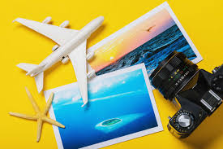
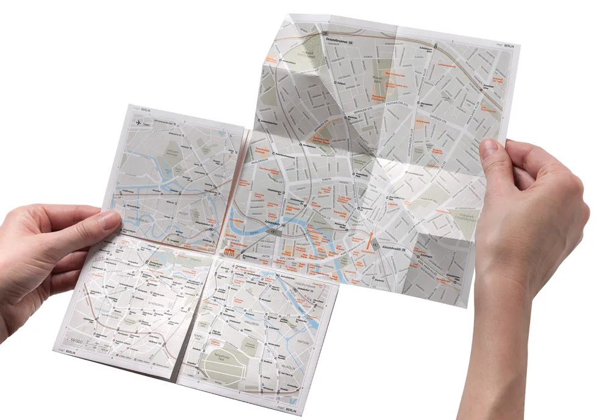
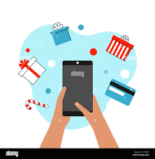
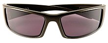

travel

Travel is the movement of people between distant geographical locations. Travel can be done by foot, bicycle, automobile, train, boat, bus, airplane, ship or other means, with or without luggage, and can be one way or round trip. Travel can also include relatively short stays between successive movements, as in the case of tourism.
.jpg)
Etymology
The origin of the word "travel" is most likely lost to history. The term "travel" may originate from the Old French word travail, which means 'work'. According to the Merriam-Webster dictionary, the first known use of the word travel was in the 14th century. It also states that the word comes from Middle English travailen, travelen (which means to torment, labor, strive, journey) and earlier from Old French travailler (which means to work strenuously, toil). In English, people still occasionally use the words travail, which means struggle. According to Simon Winchester in his book The Best Travelers' Tales (2004), the words travel and travail both share an even more ancient root: a Roman instrument of torture called the tripalium (in Latin it means "three stakes", as in to impale).[citation needed] This link may reflect the extreme difficulty of travel in ancient times. Travel in modern times may or may not be much easier, depending upon the destination. Travel to Mount Everest, the Amazon rainforest, extreme tourism, and adventure travel are more difficult forms of travel. Travel can also be more difficult depending on the method of travel, such as by bus, cruise ship, or even by bullock cart.
.jpg)
History
ravel dates back to antiquity where wealthy Greeks and Romans would travel for leisure to their summer homes and villas in cities such as Pompeii and Baiae. While early travel tended to be slower, more dangerous, and more dominated by trade and migration, cultural and technological advances over many years have tended to mean that travel has become easier and more accessible. Humankind has come a long way in transportation since Christopher Columbus sailed to the New World from Spain in 1492, an expedition which took over 10 weeks to arrive at the final destination; to the 21st century when aircraft allows travel from Spain to the United States overnight. Travel in the Middle Ages offered hardships and challenges, though it was important to the economy and to society. The wholesale sector depended (for example) on merchants dealing with/through caravans or sea-voyagers, end-user retailing often demanded the services of many itinerant peddlers wandering from village to hamlet, gyrovagues (wandering monks) and wandering friars brought theology and pastoral support to neglected areas, traveling minstrels toured, and armies ranged far and wide in various crusades and in sundry other wars. Pilgrimages were common in both the European and Islamic world and involved streams of travelers both locally and internationally. In the late 16th century, it became fashionable for young European aristocrats and wealthy upper-class men to travel to significant European cities as part of their education in the arts and literature. This was known as the Grand Tour, and included cities such as London, Paris, Venice, Florence, and Rome. However, the French Revolution brought with it the end of the Grand Tour. Travel by water often provided more comfort and speed than land-travel, at least until the advent of a network of railways in the 19th century. Travel for the purpose of tourism is reported to have started around this time when people began to travel for fun as travel was no longer a hard and challenging task. This was capitalized on by people like Thomas Cook selling tourism packages where trains and hotels were booked together. Airships and airplanes took over much of the role of long-distance surface travel in the 20th century, notably after the Second World War where there was a surplus of both aircraft and pilots. Air travel has become so ubiquitous in the 21st century that one woman, Alexis Alford, visited all 196 countries before the age of 21.
Geographic types
Travel may be local, regional, national (domestic) or international. In some countries, non-local internal travel may require an internal passport, while international travel typically requires a passport and visa. Tours are a common type of travel. Examples of travel tours are expedition cruises, small group tours and river cruises.
travel tools
map
A map is a symbolic depiction emphasizing relationships between elements of some space, such as objects, regions, or themes
water
Water is an inorganic compound with the chemical formula H2O. It is a transparent, tasteless, odorless,[c] and nearly colorless chemical substance, and it is the main constituent of Earth's hydrosphere and the fluids of all known living organisms (in which it acts as a solvent[19]). It is vital for all known forms of life, despite not providing food energy or organic micronutrients. Its chemical formula, H2O, indicates that each of its molecules contains one oxygen and two hydrogen atoms, connected by covalent bonds. The hydrogen atoms are attached to the oxygen atom at an angle of 104.45°.[20] In liquid form, H2O is also called "Water" at standard temperature and pressure.
mobile
Mobile phones are considered an important human invention as they have been one of the most widely used and sold pieces of consumer technology.The growth in popularity has been rapid in some places, for example, in the UK, the total number of mobile phones overtook the number of houses in 1999.[8] Today, mobile phones are globally ubiquitous, and in almost half the world's countries, over 90% of the population owns at least one.
.jpg)
suitcase
A suitcase is a form of luggage. It is a rectangular container with a handle and is typically used to carry one's clothes and other belongings while traveling.[1] The first suitcases appeared in the late 19th century due to the increased popularity of mass tourism at the time and were meant to hold dress suits. They were originally made using heavier materials such as leather or steel, but, beginning in the 1930s, were constructed with more lightweight materials like plastic and cardboard.
Sunglasses
Sunglasses or sun glasses (informally called shades or sunnies; more names below) are a form of protective eyewear designed primarily to prevent bright sunlight and high-energy visible light from damaging or discomforting the eyes. They can sometimes also function as a visual aid, as variously termed spectacles or glasses exist, featuring lenses that are colored, polarized or darkened. In the early 20th century, they were also known as sun cheaters (cheaters then being an American slang term for glasses)